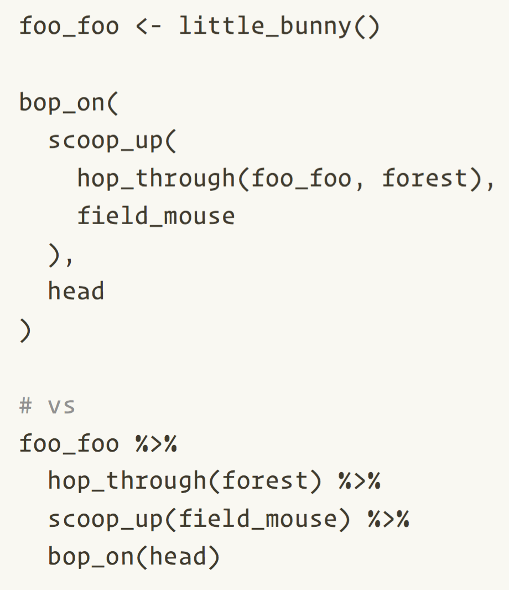
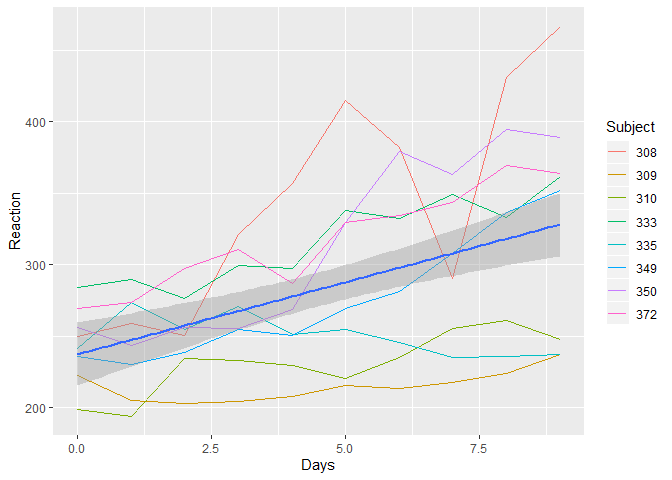

Limpieza de datos Data
con R
Introducción
Alcance

Dominando a la Bestia de los Datos, por Allison Horst
Dominando a la Bestia de los Datos, de las Ilustraciones de Ciencia de Datos de Allison Horst.
Sintaxis
Pipes
Magrittr pipe
%>%(2014+)Pipe nativo de R
|>(2021+, R \(\geq\) 4.1.0)
2022 Isabella Velásquez Entendiendo el pipe nativo de R |> https://ivelasq.rbind.io/blog/understanding-the-r-pipe/
R for Data Science: Ch 18 Pipes
Namespacing
paquete::funcion()
dplyr::select()
le indica explícitamente a R que use la función
selectdel paquetedplyrpuede ayudar a evitar conflictos de nombres (por ejemplo,
MASS::select())no requiere
library(dplyr)en general, nuestro objetivo fue utilizar namespacing para funciones de paquetes que no son
tidyverse.
Principios de Gestión de Datos
Historias de terror con datos
Historias de terror con datos
By knowyourmeme.com
Principios de Organización de Datos
- Estructura de los datos
- Valores de las variables
- Tipos de variables
- Datos faltantes
Estructura de los datos
- Los datos deben formar un rectángulo de filas y columnas.
- Debes tener el número esperado de filas (casos en tus datos).
- Debes tener el número esperado de columnas (variables en tus datos).
Estructura de los datos
- Los nombres de las variables deben estar en la primera, y solo la primera fila de tus datos.
- También deben seguir guías prácticas para nombrar las variables.
- Los nombres de las variables deben:
- Ser únicos.
- Ser significativos (
géneroen lugar deX1). - No incluir espacios.
- No incluir caracteres especiales, excepto
_.- Entonces, no se permiten
/,-,!,"
- Entonces, no se permiten
- No empezar con un número o carácter especial.
Preguntas:
¿Qué problemas de estructura de datos notas en nuestros datos de muestra?
01:00
Estructura de los datos
- Los nombres de las variables no están en la primera fila de los datos
- Nuestros datos no forman un rectángulo - Columna vacía, filas vacías
- Los nombres de las variables no siguen las mejores prácticas
Valores de las variables
- Los valores deben ser explícitos, no implícitos
- Si se da a entender que una celda en blanco es cero, completa esa celda con un cero real
- No se debe utilizar la codificación de colores para indicar información. Crea una nueva variable.
- Los valores deben ser analizables. Esto significa que no se debe capturar más de una medida en una variable.
Valores de las variables
- Las variables deben ser capturadas de manera consistente dentro de una columna
- Las fechas deben ser capturadas de manera consistente (es decir, AAAA-MM-DD)
- Las categorías deben ser capturadas de manera consistente (tanto en ortografía como en mayúsculas y minúsculas)
- Si la variable es numérica, los valores deben estar dentro del rango esperado
Preguntas:
¿Qué problemas de valores de variables notas en nuestros datos de muestra?
01:00
Valores de Variables
- El uso de colores indica información
- Dos cosas medidas en una columna
- Valores categóricos capturados de manera inconsistente
Tipos de Variables
Las variables deben almacenarse como el tipo esperado (o en términos de R, class)
- Numérico
- Contiene valores numéricos (14.5, 14.539, 789, -24)
- Las variables numéricas no pueden contener caracteres especiales, espacios ni letras
- 100mg
- 83/150
- ” 89”
Tipos de Variables
- Fecha, Hora, Fecha-Hora
- Representadas en R como
<fecha>,<hora>o<dttm>/<POSIXct> - Te permiten realizar cálculos con fechas
- Representadas en R como
Tipos de Variables
- Carácter
- Contiene valores de caracteres o cadenas (“kg”, “R en Medicina”, “11.5”, “5mg”)
- Factor
- Una clase especial de variables, útil cuando se trabaja con variables categóricas u ordinales
- Los factores asignan un orden a los grupos de variables
- Debes asignar esta clase a tus variables
- Puedes obtener más información sobre cómo trabajar con factores en este artículo: Manipulación de Datos Categóricos en R
Preguntas
¿Cuál es la clase de R para las siguientes variables?
Preguntas
¿Qué problemas de tipo de variable notas en nuestros datos de muestra?
01:00
Tipos de variables
- Fechas almacenadas como números
- Texto almacenado en variables numéricas
Datos faltantes
- Los datos faltantes deben aparecer como se espera
- La cantidad de datos faltantes
- Las variables/casos para los cuales faltan datos
- Utiliza valores consistentes para indicar respuestas faltantes (en blanco, NA, -999)
- Documenta tu decisión
- Los valores faltantes deben coincidir con el tipo de variable
- Es decir, no uses “sin respuesta” en una variable numérica
Preguntas
¿Qué problemas de datos faltantes notas en nuestros datos de muestra?
01:00
Datos faltantes
- Datos faltantes inesperados
- Valores faltantes inconsistentes utilizados
- Valores faltantes que no coinciden con el tipo de variable
Reducción de errores
La forma número uno de reducir los errores de datos es hacer un plan antes de recopilar los datos.
Corrige los datos en la fuente
Planifica las variables que deseas recopilar
Construye tus herramientas de recopilación/ingreso de datos de acuerdo a tu plan
Prueba tus herramientas de datos antes de recopilar/ingresar datos
Verifica tus datos con frecuencia durante la recopilación/ingreso de datos
Planifica las variables que deseas recopilar
Es necesario planificar
- Nombre de la variable
- Las etiquetas de la variables.
- Tipo de variables
- Valores/rangos permitidos
- Valores faltantes
Se recomendado planificar
- La identificación del posible universo de las variables
Diccionario de datos
| var_name | label | type | values | missing_values |
|---|---|---|---|---|
| pat_id | Patient Identifier | character | 001-030 | NA |
| treatment | Treatment for UC | character | upa; uste; oza | NA |
| start_date | Date of start of treatment | date | YYYY-MM-DD | NA |
| ethnic | Ethnicity - hispanic or not hispanic | character | hispanic; not hispanic | missing |
| start_mes | Mayo endoscopic Score at start of treatment | numeric | 0-3 | -99 |
Herramientas para la gestion de datos
- Excel (
xlsx) - Conoce las fortalezas y limitaciones de tu herramienta
- Considera aspectos como el control de versiones y validación.
Organiza tus datos con base en tu diccionario de datos
Nombra tus variables correctamente
- En lugar de Q1, Q2, Q3 -> id, fecha_inicio, tratamiento
Crea elementos que acepten solo valores permitidos
- Solo dentro de un rango especificado (0-50)
- Solo dentro de categorías especificadas (“hispano”, “no hispano”)
Crea elementos que acepten solo tipos de variable especificados
- Solo valores numéricos
- Solo fechas en formato AAAA-MM-DD
Prueba tu herramienta de recopilación o ingreso de datos
- Recopila/ingresa datos de muestra
- ¿Falta algún elemento?
- ¿Revisa la ocurrencia de valores inesperados?
- Valores fuera de rango
- Formatos incorrectos
- Entradas inconsistentes
- “m”, “male”, “Male”, “MALE”
Revisa tus datos con frecuencia durante la recopilación
- Valida tus datos según tus expectativas
pointblank report
library(pointblank)
# Importar
df_raw <- readxl::read_excel("data/mydata.csv")
# Verificar mis suposiciones
create_agent(df_raw) |>
rows_distinct(columns = vars(pat_id)) |>
col_vals_not_null(columns = vars(pat_id)) |>
col_is_date(columns = vars(start_date)) |>
col_is_numeric(columns = vars(start_mes)) |>
col_vals_in_set(columns = vars(treatment), set = c("upa", "uste", "oza")) |>
col_vals_in_set(columns = vars(ethnic), set = c("hispanic", "not hispanic")) |>
col_vals_between(columns = vars(start_mes), left = 0, right = 3, na_pass = FALSE) |>
interrogate()Revisa tus datos con frecuencia durante la recolección
Crea un cuaderno de notas
codebookrcodebookmemiscsjPlot
codebookr codebook
Limpieza de Datos
Todas las prácticas que acabamos de cubrir se realizan en un mundo ideal, donde tenemos autonomía sobre cómo se recopilan los datos. Pero obviamente seguirán habiendo situaciones en las que te entreguen datos sobre los cuales no tuviste control sobre el proceso de recopilación/ingreso.
O tal vez, incluso si recopilaste tus propios datos, a pesar de tus mejores esfuerzos por recopilar/ingresar datos limpios, aún terminaste con datos que contienen errores.
Importar archivos a R
Vamos a utilizar la función
read_excel()del paquetereadxlHay varios argumentos a considerar al usar esta función
- path
- sheet = NULL
- col_names = TRUE
- na = ” ”
- skip = 0
Escribe
?read_excelen tu consola para ver más argumentos
Importar archivos a R
| pat_id | treatment | start_date | ethnic | race | dob | ...7 | start_bp | pre/post_wt_kg | start_mes |
|---|---|---|---|---|---|---|---|---|---|
| 001 | upa | 44208 | hispanic | Caucasian | 2005-01-07 | NA | 114/72 | 84/82 | 3 |
| 002 | uste | 44215 | not hispanic | Caucasian | 1937-04-13 | NA | 132/86 | 77/77 | 2 |
| 003 | oza | 44230 | not hispanic | African-American | 1946-06-06 | NA | 124/92 | 74/75 | 1 |
| 004 | upa | 44245 | not hispanic | Caucasian | 1963-07-14 | NA | 144/83 | 66/65 | 3 |
| 005 | oza | 44255 | not hispanic | Mixed | 1978-05-12 | NA | 122/78 | 55/56 | 3 |
| 006 | uste | 44259 | not hispanic | Other | 1992-04-03 | NA | 121/80 | 111/110 | 2 |
| 007 | uste | 44264 | not hispanic | Asian | 1955-08-22 | NA | 133/74 | 133/130 | 3 |
| 008 | oza | 44999 | Hispanic | afromerican | 1974-09-11 | NA | 116/73 | 74/76 | 3 |
| 009 | upa | 44276 | NOT hispanic | Caucasian | 1984-11-14 | NA | 118/66 | 82/80 | 2 |
| 010 | oza | 44278 | hispamnic | Caucasian | 1972-12-20 | NA | 122/78 | 85/87 | 3 |
Revisión de los datos
El EDA (Exploratory data analysis) no es un proceso formal con un conjunto estricto de reglas. Más que nada, el EDA es un estado mental. Durante las fases iniciales del EDA, debes sentirte libre de investigar cada idea que se te ocurra. - R for Data Science
Revisión de los datos
Conoce tus datos
- ¿Cuántas filas? ¿Cuántas columnas?
- ¿Cuáles son los tipos de variables?
- ¿Cuáles son los valores de las variables?
- ¿Cuántos datos faltantes hay?
- ¿Cómo se relacionan las variables?
Existen varias funciones que se pueden utilizar para explorar los datos
dplyr::glimpse()skimr::skim()base::summary()visdat:vis_dat()summarytools::dfSummary()DataExplorer::create_report()Hmisc::describe()
summarytools::dfSummary()
skimr::skim()
Etapa 1
Limpieza de datos
Nombres de las variables
Nombres originales de variables en Excel:
Los nombres de variables se importan como se muestra, con modificaciones de readxl::read_excel() para garantizar que estos sean únicos:
Nombres de variables, más limpios
Eliminar columnas o filas vacías
# A tibble: 6 × 5
pat_id race dob x7 start_bp
<chr> <chr> <dttm> <lgl> <chr>
1 013 Caucasian 1948-02-27 00:00:00 NA 118/73
2 014 African-American 1966-04-22 00:00:00 NA 106/59
3 015 H/API 1978-08-11 00:00:00 NA 112/69
4 <NA> <NA> NA NA <NA>
5 016 African-American 1998-10-28 00:00:00 NA 114/76
6 017 Caucasian 2001-01-09 00:00:00 NA 124/80 # A tibble: 6 × 4
pat_id race dob start_bp
<chr> <chr> <dttm> <chr>
1 013 Caucasian 1948-02-27 00:00:00 118/73
2 014 African-American 1966-04-22 00:00:00 106/59
3 015 H/API 1978-08-11 00:00:00 112/69
4 016 African-American 1998-10-28 00:00:00 114/76
5 017 Caucasian 2001-01-09 00:00:00 124/80
6 018 Caucasian 1994-03-07 00:00:00 120/68 Rows: 31
Columns: 38
$ pat_id <chr> "001", "002", "003", "004", "005", "0…
$ treatment <chr> "upa", "uste", "oza", "upa", "oza", "…
$ start_date <dbl> 44208, 44215, 44230, 44245, 44255, 44…
$ ethnic <chr> "hispanic", "not hispanic", "not hisp…
$ race <chr> "Caucasian", "Caucasian", "African-Am…
$ dob <dttm> 2005-01-07, 1937-04-13, 1946-06-06, …
$ x7 <lgl> NA, NA, NA, NA, NA, NA, NA, NA, NA, N…
$ start_bp <chr> "114/72", "132/86", "124/92", "144/83…
$ pre_post_wt_kg <chr> "84/82", "77/77", "74/75", "66/65", "…
$ start_mes <dbl> 3, 2, 1, 3, 3, 2, 3, 3, 2, 3, 3, 3, 3…
$ start_bss <dbl> 75.85449, 54.65536, 28.46290, 77.2364…
$ start_abd_score <dbl> 76.80263, 53.56908, 30.82623, 77.7276…
$ start_sys <dbl> 81.63807, 53.39802, 29.50837, 79.0785…
$ start_coping <dbl> 50.75913, 28.23465, 20.03401, 45.1019…
$ start_emo <dbl> 79.31260, 58.55421, 32.22812, 75.6089…
$ daily_life_impact_score_at_start <dbl> 87.81723, 59.87844, 28.39321, 86.1173…
$ start_wbc <dbl> 8.2, 10.1, 5.5, 4.7, 8.9, 9.3, 5.6, 9…
$ start_plt <chr> "273K/microL", "414K/microL", "323K/m…
$ start_na <chr> "137mmol/L", "142mmol/L", "140mmol/L"…
$ start_k <chr> "3.7", "4.0999999999999996", "4.3", "…
$ end_month <dbl> 6, 6, 7, 7, 7, 8, 8, 8, 8, 8, 9, 9, 9…
$ end_day <dbl> 14, 21, 6, 22, 30, 4, 10, 15, 22, 26,…
$ end_year <dbl> 2021, 2021, 2021, 2021, 2021, 2021, 2…
$ end_mes <dbl> 0, 1, 1, 1, 2, 1, 2, 2, 0, 1, 0, 1, 1…
$ end_bss <dbl> 9.854493, 32.655357, 28.462897, 33.23…
$ end_abd <dbl> 16.802628, 33.569079, 30.826225, 37.7…
$ end_sys <dbl> 9.638072, 29.398023, 29.508373, 31.07…
$ end_coping <dbl> 23.759131, 19.234646, 20.034009, 27.1…
$ end_emo <chr> "39.760954572288782", "49.36928154791…
$ end_dl <chr> "9.4097102977463347", "35.23874059870…
$ end_wbc <dbl> 8.541698, 11.076921, 3.000000, 4.8581…
$ end_plt <dbl> 201, 340, 256, 327, 432, 348, 181, 12…
$ end_na <dbl> 137.3278, 142.2140, 140.0831, 139.158…
$ end_k <dbl> 3.958430, 4.174979, 4.433533, 3.53357…
$ fake_street <chr> "990 Mohammad Mountain", "8512 O'Conn…
$ fake_city <chr> "North Sigmundville", "Port Halstad",…
$ fake_state <chr> "New Mexico", "Missouri", "South Caro…
$ fake_zip <dbl> 96074, 11264, 57246, 31457, 30711, 52…Rows: 30
Columns: 37
$ pat_id <chr> "001", "002", "003", "004", "005", "0…
$ treatment <chr> "upa", "uste", "oza", "upa", "oza", "…
$ start_date <dbl> 44208, 44215, 44230, 44245, 44255, 44…
$ ethnic <chr> "hispanic", "not hispanic", "not hisp…
$ race <chr> "Caucasian", "Caucasian", "African-Am…
$ dob <dttm> 2005-01-07, 1937-04-13, 1946-06-06, …
$ start_bp <chr> "114/72", "132/86", "124/92", "144/83…
$ pre_post_wt_kg <chr> "84/82", "77/77", "74/75", "66/65", "…
$ start_mes <dbl> 3, 2, 1, 3, 3, 2, 3, 3, 2, 3, 3, 3, 3…
$ start_bss <dbl> 75.85449, 54.65536, 28.46290, 77.2364…
$ start_abd_score <dbl> 76.80263, 53.56908, 30.82623, 77.7276…
$ start_sys <dbl> 81.63807, 53.39802, 29.50837, 79.0785…
$ start_coping <dbl> 50.75913, 28.23465, 20.03401, 45.1019…
$ start_emo <dbl> 79.31260, 58.55421, 32.22812, 75.6089…
$ daily_life_impact_score_at_start <dbl> 87.81723, 59.87844, 28.39321, 86.1173…
$ start_wbc <dbl> 8.2, 10.1, 5.5, 4.7, 8.9, 9.3, 5.6, 9…
$ start_plt <chr> "273K/microL", "414K/microL", "323K/m…
$ start_na <chr> "137mmol/L", "142mmol/L", "140mmol/L"…
$ start_k <chr> "3.7", "4.0999999999999996", "4.3", "…
$ end_month <dbl> 6, 6, 7, 7, 7, 8, 8, 8, 8, 8, 9, 9, 9…
$ end_day <dbl> 14, 21, 6, 22, 30, 4, 10, 15, 22, 26,…
$ end_year <dbl> 2021, 2021, 2021, 2021, 2021, 2021, 2…
$ end_mes <dbl> 0, 1, 1, 1, 2, 1, 2, 2, 0, 1, 0, 1, 1…
$ end_bss <dbl> 9.854493, 32.655357, 28.462897, 33.23…
$ end_abd <dbl> 16.802628, 33.569079, 30.826225, 37.7…
$ end_sys <dbl> 9.638072, 29.398023, 29.508373, 31.07…
$ end_coping <dbl> 23.759131, 19.234646, 20.034009, 27.1…
$ end_emo <chr> "39.760954572288782", "49.36928154791…
$ end_dl <chr> "9.4097102977463347", "35.23874059870…
$ end_wbc <dbl> 8.541698, 11.076921, 3.000000, 4.8581…
$ end_plt <dbl> 201, 340, 256, 327, 432, 348, 181, 12…
$ end_na <dbl> 137.3278, 142.2140, 140.0831, 139.158…
$ end_k <dbl> 3.958430, 4.174979, 4.433533, 3.53357…
$ fake_street <chr> "990 Mohammad Mountain", "8512 O'Conn…
$ fake_city <chr> "North Sigmundville", "Port Halstad",…
$ fake_state <chr> "New Mexico", "Missouri", "South Caro…
$ fake_zip <dbl> 96074, 11264, 57246, 31457, 30711, 52…Recodificación
df_clean <- df_raw |>
janitor::clean_names() |>
janitor::remove_empty(which = c("rows", "cols")) |>
mutate(
ethnic_clean = case_when(
ethnic %in% c("hispanic", "Hispanic", "hispamnic") ~ "hispanic",
ethnic %in% c("NOT hispanic", "not hispanic") ~ "not hispanic",
.default = ethnic
)
)
df_clean |>
count(ethnic_clean)# A tibble: 2 × 2
ethnic_clean n
<chr> <int>
1 hispanic 5
2 not hispanic 25Reemplazar valores por valores faltantes

df_clean <- df_raw |>
janitor::clean_names() |>
janitor::remove_empty(which = c("rows", "cols")) |>
mutate(
ethnic_clean = case_when(
ethnic %in% c("hispanic", "Hispanic", "hispamnic") ~ "hispanic",
ethnic %in% c("NOT hispanic", "not hispanic") ~ "not hispanic",
),
end_na_clean = na_if(end_na, -99)
) 
Tipo de variable incorrecto
Rows: 31
Columns: 1
$ end_emo <chr> "39.760954572288782", "49.369281547911214", "35.90128630678054… [1] "39.760954572288782" "49.369281547911214" "35.901286306780541"
[4] "50.2057532077703" "64.973437247083666" "35.965982580017993"
[7] "57.76367623799068" "61.960515932643503" "27.768279853236116"
[10] "45.948161004250508" "37.34426764708568" "51.859745680890889"
[13] "55.055731509083827" "62.246053520477801" "not done"
[16] NA "51.794563346733348" "28.024233546743879"
[19] "58.368126398937022" "13.120426912160625" "45.417571554273906"
[22] "41.388894056374887" "27.007297504717883" "64.595741275696824"
[25] "50.243011921919624" "52.659962900705473" "41.581059324621933"
[28] "33.176949642484104" "67.258563644329342" "22.931081374117134"
[31] "31.118353038978491"df_clean <- df_raw |>
janitor::clean_names() |>
janitor::remove_empty(which = c("rows", "cols")) |>
mutate(
ethnic_clean = case_when(
ethnic %in% c("hispanic", "Hispanic", "hispamnic") ~ "hispanic",
ethnic %in% c("NOT hispanic", "not hispanic") ~ "not hispanic",
),
end_na_clean = na_if(end_na, -99),
end_emo_clean = na_if(end_emo, "not done") |> as.numeric()
) Rows: 30
Columns: 2
$ end_emo <chr> "39.760954572288782", "49.369281547911214", "35.90128630…
$ end_emo_clean <dbl> 39.76095, 49.36928, 35.90129, 50.20575, 64.97344, 35.965…# A tibble: 30 × 3
end_emo_clean end_emo n
<dbl> <chr> <int>
1 13.1 13.120426912160625 1
2 22.9 22.931081374117134 1
3 27.0 27.007297504717883 1
4 27.8 27.768279853236116 1
5 28.0 28.024233546743879 1
6 31.1 31.118353038978491 1
7 33.2 33.176949642484104 1
8 35.9 35.901286306780541 1
9 36.0 35.965982580017993 1
10 37.3 37.34426764708568 1
# ℹ 20 more rowsFechas
Rows: 31
Columns: 1
$ start_date <dbl> 44208, 44215, 44230, 44245, 44255, 44259, 44264, 44999, 442…df_clean <- df_raw |>
janitor::clean_names() |>
janitor::remove_empty(which = c("rows", "cols")) |>
mutate(
ethnic_clean = case_when(
ethnic %in% c("hispanic", "Hispanic", "hispamnic") ~ "hispanic",
ethnic %in% c("NOT hispanic", "not hispanic") ~ "not hispanic",
),
end_na_clean = na_if(end_na, -99),
end_emo_clean = na_if(end_emo, "not done") |> as.numeric(),
start_date_clean = janitor::convert_to_date(start_date)
) # A tibble: 30 × 3
start_date start_date_clean n
<dbl> <date> <int>
1 44208 2021-01-12 1
2 44215 2021-01-19 1
3 44230 2021-02-03 1
4 44245 2021-02-18 1
5 44255 2021-02-28 1
6 44259 2021-03-04 1
7 44264 2021-03-09 1
8 44276 2021-03-21 1
9 44278 2021-03-23 1
10 44297 2021-04-11 1
# ℹ 20 more rowsSeparando valores numéricos y texto
Rows: 31
Columns: 1
$ start_na <chr> "137mmol/L", "142mmol/L", "140mmol/L", "139mmol/L", "144mmol/… [1] "137mmol/L" "142mmol/L" "140mmol/L" "139mmol/L" "144mmol/L" "145mmol/L"
[7] "142mmol/L" "138mmol/L" "140mmol/L" "137mmol/L" "143mmol/L" "136mmol/L"
[13] "135mmol/L" "141mmol/L" "133mmol/L" NA "135mmol/L" "143mmol/L"
[19] "136mmol/L" "144mmol/L" "145mmol/L" "140mmol/L" "141mmol/L" "142mmol/L"
[25] "138mmol/L" "139mmol/L" "142mmol/L" "144mmol/L" "139mmol/L" "138mmol/L"
[31] "140mmol/L"df_clean <- df_raw |>
janitor::clean_names() |>
janitor::remove_empty(which = c("rows", "cols")) |>
mutate(
ethnic_clean = case_when(
ethnic %in% c("hispanic", "Hispanic", "hispamnic") ~ "hispanic",
ethnic %in% c("NOT hispanic", "not hispanic") ~ "not hispanic",
),
end_na_clean = na_if(end_na, -99),
end_emo_clean = na_if(end_emo, "not done") |> as.numeric(),
start_na_clean = parse_number(start_na)
) Rows: 30
Columns: 2
$ start_na <chr> "137mmol/L", "142mmol/L", "140mmol/L", "139mmol/L", "14…
$ start_na_clean <dbl> 137, 142, 140, 139, 144, 145, 142, 138, 140, 137, 143, …# A tibble: 12 × 3
start_na_clean start_na n
<dbl> <chr> <int>
1 133 133mmol/L 1
2 135 135mmol/L 2
3 136 136mmol/L 2
4 137 137mmol/L 2
5 138 138mmol/L 3
6 139 139mmol/L 3
7 140 140mmol/L 4
8 141 141mmol/L 2
9 142 142mmol/L 4
10 143 143mmol/L 2
11 144 144mmol/L 3
12 145 145mmol/L 2Variable de tipo carácter como factor
Rows: 30
Columns: 2
$ treatment <chr> "upa", "uste", "oza", "upa", "oza", "uste", "uste", "oza"…
$ ethnic_clean <chr> "hispanic", "not hispanic", "not hispanic", "not hispanic…df_clean <- df_raw |>
janitor::clean_names() |>
janitor::remove_empty(which = c("rows", "cols")) |>
mutate(
ethnic_clean = case_when(
ethnic %in% c("hispanic", "Hispanic", "hispamnic") ~ "hispanic",
ethnic %in% c("NOT hispanic", "not hispanic") ~ "not hispanic",
) |> fct_infreq(),
end_na_clean = na_if(end_na, -99),
end_emo_clean = na_if(end_emo, "not done") |> as.numeric(),
start_na_clean = parse_number(start_na),
treatment = fct_relevel(treatment, "upa", "uste", "oza")
) Consulta el paquete forcats para otras soluciones de manipulación de factores.
Rows: 30
Columns: 2
$ treatment <fct> upa, uste, oza, upa, oza, uste, uste, oza, upa, oza, upa,…
$ ethnic_clean <fct> hispanic, not hispanic, not hispanic, not hispanic, not h…Separación de valores
Rows: 30
Columns: 1
$ start_bp <chr> "114/72", "132/86", "124/92", "144/83", "122/78", "121/80", "… [1] "114/72" "132/86" "124/92" "144/83" "122/78" "121/80" "133/74" "116/73"
[9] "118/66" "122/78" "126/82" "114/68" "118/73" "106/59" "112/69" "114/76"
[17] "124/80" "120/68" "119/77" "116/74" "121/80" "112/58" "117/67" "118/73"
[25] "116/74" "126/84" "144/96" "120/84" "115/75" "142/92"df_clean <- df_raw |>
janitor::clean_names() |>
janitor::remove_empty(which = c("rows", "cols")) |>
mutate(
ethnic_clean = case_when(
ethnic %in% c("hispanic", "Hispanic", "hispamnic") ~ "hispanic",
ethnic %in% c("NOT hispanic", "not hispanic") ~ "not hispanic",
) |> fct_infreq(),
end_na_clean = na_if(end_na, -99),
end_emo_clean = na_if(end_emo, "not done") |> as.numeric(),
start_na_clean = parse_number(start_na),
treatment = fct_relevel(treatment, "upa", "uste", "oza")
) |>
separate_wider_delim(start_bp, delim ="/", names = c("bp_systolic", "bp_diastolic"), cols_remove = FALSE) |>
mutate(across(c(bp_systolic, bp_diastolic), as.numeric)) Rows: 30
Columns: 3
$ start_bp <chr> "114/72", "132/86", "124/92", "144/83", "122/78", "121/80…
$ bp_systolic <dbl> 114, 132, 124, 144, 122, 121, 133, 116, 118, 122, 126, 11…
$ bp_diastolic <dbl> 72, 86, 92, 83, 78, 80, 74, 73, 66, 78, 82, 68, 73, 59, 6…Etapa 2
Manipulación de tus datos
¿Dónde estamos ahora?
- Hemos realizado la DEV (Exploración y Validación de Datos) - con más validación por hacer. La validación de datos es un proceso continuo, hasta llegar al bloqueo de datos.
- Discutimos la importancia de prevenir errores de datos en la fuente.
¿Dónde estamos ahora?
- Realizamos la limpieza de la Etapa 1: limpiamos los nombres de las variables, eliminamos columnas/filas vacías, corregimos los tipos/clases de variables (caracteres a numéricos, recodificación de factores, Problemaas con fechas), abordamos los valores faltantes y las violaciones de los principios de datos ordenados (separación).
- Si bien la Etapa 1 es necesaria en casi todos los proyectos, a menudo es necesario realizar la limpieza de datos de la Etapa 2, pero no en todos los proyectos.
Limpieza de datos de la Etapa 2
- Cubriremos los siguientes temas:
- Reestructuración de datos en formato largo - ancho.
- Ampliación o relleno de datos longitudinales.
- Unión de múltiples conjuntos de datos.
Reestructuración de datos en formato largo - ancho
Formato Ancho
# A tibble: 6 × 8
pat_id treatment start_mes end_mes start_bss end_bss start_emo end_emo
<chr> <chr> <dbl> <dbl> <dbl> <dbl> <dbl> <dbl>
1 001 upa 3 0 75.9 9.85 79.3 39.8
2 002 uste 2 1 54.7 32.7 58.6 49.4
3 003 oza 1 1 28.5 28.5 32.2 35.9
4 004 upa 3 1 77.2 33.2 75.6 50.2
5 005 oza 3 2 78.8 56.8 74.3 65.0
6 006 uste 2 1 54.4 32.4 45.3 36.0Formato Largo
# A tibble: 9 × 4
pat_id treatment measure score
<chr> <chr> <chr> <dbl>
1 001 upa start_mes 3
2 001 upa end_mes 0
3 001 upa start_bss 75.9
4 001 upa end_bss 9.85
5 001 upa start_emo 79.3
6 001 upa end_emo 39.8
7 002 uste start_mes 2
8 002 uste end_mes 1
9 002 uste start_bss 54.7 La Unidad de Análisis - Formato ancho
- Es posible que deseemos realizar un análisis por paciente, ya que cada paciente puede (o no) tener el Resultadoado. Si tenemos múltiples observaciones o puntos de datos en cada paciente,esto se puede almacenar en formato ancho, con una fila por paciente.
# A tibble: 6 × 8
pat_id treatment start_mes end_mes start_bss end_bss start_emo end_emo
<chr> <chr> <dbl> <dbl> <dbl> <dbl> <dbl> <dbl>
1 001 upa 3 0 75.9 9.85 79.3 39.8
2 002 uste 2 1 54.7 32.7 58.6 49.4
3 003 oza 1 1 28.5 28.5 32.2 35.9
4 004 upa 3 1 77.2 33.2 75.6 50.2
5 005 oza 3 2 78.8 56.8 74.3 65.0
6 006 uste 2 1 54.4 32.4 45.3 36.0La Unidad de Análisis - Formato largo
- A menudo nos interesa el cambio en un Resultadoado a lo largo del tiempo.
- Para que esto funcione, necesitamos una fila por cada medición del Resultadoado. Esto genera datos en formato largo, con múltiples visitas y mediciones para cada paciente.
# A tibble: 180 × 4
pat_id treatment measure score
<chr> <chr> <chr> <dbl>
1 001 upa start_mes 3
2 001 upa end_mes 0
3 001 upa start_bss 75.9
4 001 upa end_bss 9.85
5 001 upa start_emo 79.3
6 001 upa end_emo 39.8
7 002 uste start_mes 2
8 002 uste end_mes 1
9 002 uste start_bss 54.7
10 002 uste end_bss 32.7
# ℹ 170 more rowsDecisiónes sobre la Unidad de Análisis
- La unidad de análisis generalmente depende de la
Preguntaque hacemos.
¿Es el Paciente la Unidad de Análisis?
- ¿El paciente falleció?
- ¿El paciente tuvo el Resultadoado de positivo/…?
- ¿El paciente alcanzó la remisión de la enfermedad?
¿Es la consulta la unidad de análisis?
- ¿Mejoró los valores de … de la Semana 0 a la Semana 8?
- ¿Disminuyeron las afecciones, conteos …. después del tratamiento?
Decisiónes sobre la Unidad de Análisis
La mayoría de las veces utilizarás datos en formato largo, y esta estructura de datos permite examinar múltiples predictores y Resultados.
Dependiendo de la pregunta de análisis, es posible que desees utilizar datos en formato ancho (generalmente con Resultados dicotómicos).
Reorganización de los datos con tidyr
A menudo ingresamos los datos por para cada una de las muestras.
Terminamos con datos “en formato ancho” en lugar de datos “en formato largo”
# A tibble: 6 × 8
pat_id treatment start_mes end_mes start_bss end_bss start_emo end_emo
<chr> <chr> <dbl> <dbl> <dbl> <dbl> <dbl> <dbl>
1 001 upa 3 0 75.9 9.85 79.3 39.8
2 002 uste 2 1 54.7 32.7 58.6 49.4
3 003 oza 1 1 28.5 28.5 32.2 35.9
4 004 upa 3 1 77.2 33.2 75.6 50.2
5 005 oza 3 2 78.8 56.8 74.3 65.0
6 006 uste 2 1 54.4 32.4 45.3 36.0# A tibble: 180 × 4
pat_id treatment measure score
<chr> <chr> <chr> <dbl>
1 001 upa start_mes 3
2 001 upa end_mes 0
3 001 upa start_bss 75.9
4 001 upa end_bss 9.85
5 001 upa start_emo 79.3
6 001 upa end_emo 39.8
7 002 uste start_mes 2
8 002 uste end_mes 1
9 002 uste start_bss 54.7
10 002 uste end_bss 32.7
# ℹ 170 more rowsReorganización de los datos con tidyr
- R (y la mayoría de las funciones de R) están vectorizados para manejar datos en formato largo.
- Una pequeña observación por fila.
- La mayoría de los análisis en R son más fáciles de ejecutar con datos en formato largo.
# A tibble: 180 × 4
pat_id treatment measure score
<chr> <chr> <chr> <dbl>
1 001 upa start_mes 3
2 001 upa end_mes 0
3 001 upa start_bss 75.9
4 001 upa end_bss 9.85
5 001 upa start_emo 79.3
6 001 upa end_emo 39.8
7 002 uste start_mes 2
8 002 uste end_mes 1
9 002 uste start_bss 54.7
10 002 uste end_bss 32.7
# ℹ 170 more rowsPivoteando a un formato largo
- Necesitamos reorganizar los datos de formato ancho a formato largo de manera regular.
- Esto “alarga” los datos, aumentando el número de filas y disminuyendo el número de columnas.
Pivoteando a un formato largo
Argumentos:
data,cols,names_to,values_toy otros argumentos opcionales.Detalles de la página de ayuda de tidyverse aquí.
data= tu dataframe/tibble, puedes usar el operador pipe|> | %>%.cols= columnas a reorganizar, como un vector de nombres, por número o seleccionadas con las funciones de tidyselect.names_to= Nombre de la nueva columna o columnas a crear a partir de la información almacenada en los nombres de columna de los datos especificados porcols.values_to= nombre de la columna a crear a partir de los datos almacenados en los valores de las celdas.
Pivoteando a un formato largo
Comencemos con la versión de en formato ancho(columnas seleccionadas de messy_uc)
# A tibble: 30 × 8
pat_id treatment start_mes end_mes start_bss end_bss start_emo end_emo
<chr> <chr> <dbl> <dbl> <dbl> <dbl> <dbl> <dbl>
1 001 upa 3 0 75.9 9.85 79.3 39.8
2 002 uste 2 1 54.7 32.7 58.6 49.4
3 003 oza 1 1 28.5 28.5 32.2 35.9
4 004 upa 3 1 77.2 33.2 75.6 50.2
5 005 oza 3 2 78.8 56.8 74.3 65.0
6 006 uste 2 1 54.4 32.4 45.3 36.0
7 007 uste 3 2 79.7 57.7 66.6 57.8
8 008 oza 3 2 75.0 53.0 74.5 62.0
9 009 upa 2 0 53.1 9.06 50.0 27.8
10 010 oza 3 1 78.9 34.9 72.5 45.9
# ℹ 20 more rows- Ten en cuenta que hay 30 filas de observaciones, con 6 cantidades medidas para cada observación.
Pivoteando a un formato largo
Esta es la versión larga con la que queremos terminar.
# A tibble: 180 × 4
pat_id treatment measure score
<chr> <chr> <chr> <dbl>
1 001 upa start_mes 3
2 001 upa end_mes 0
3 001 upa start_bss 75.9
4 001 upa end_bss 9.85
5 001 upa start_emo 79.3
6 001 upa end_emo 39.8
7 002 uste start_mes 2
8 002 uste end_mes 1
9 002 uste start_bss 54.7
10 002 uste end_bss 32.7
# ℹ 170 more rows- Ten en cuenta que ahora hay 180 filas (30*6), con una fila por cada medida y cada observación.
Realizando el pivot_longer()
¿Qué valores queremos para estos argumentos clave para usar tidyr::pivot_longer?
cols(¿qué columnas queremos pivotear?)names_to(variable para almacenar los nombres de las columnas)values_to(variable para almacenar los valores de cada una de las mediciones)
# A tibble: 30 × 8
pat_id treatment start_mes end_mes start_bss end_bss start_emo end_emo
<chr> <chr> <dbl> <dbl> <dbl> <dbl> <dbl> <dbl>
1 001 upa 3 0 75.9 9.85 79.3 39.8
2 002 uste 2 1 54.7 32.7 58.6 49.4
3 003 oza 1 1 28.5 28.5 32.2 35.9
4 004 upa 3 1 77.2 33.2 75.6 50.2
5 005 oza 3 2 78.8 56.8 74.3 65.0
6 006 uste 2 1 54.4 32.4 45.3 36.0
7 007 uste 3 2 79.7 57.7 66.6 57.8
8 008 oza 3 2 75.0 53.0 74.5 62.0
9 009 upa 2 0 53.1 9.06 50.0 27.8
10 010 oza 3 1 78.9 34.9 72.5 45.9
# ℹ 20 more rowstidyr::pivot_longer()
# A tibble: 30 × 8
pat_id treatment start_mes end_mes start_bss end_bss start_emo end_emo
<chr> <chr> <dbl> <dbl> <dbl> <dbl> <dbl> <dbl>
1 001 upa 3 0 75.9 9.85 79.3 39.8
2 002 uste 2 1 54.7 32.7 58.6 49.4
3 003 oza 1 1 28.5 28.5 32.2 35.9
4 004 upa 3 1 77.2 33.2 75.6 50.2
5 005 oza 3 2 78.8 56.8 74.3 65.0
6 006 uste 2 1 54.4 32.4 45.3 36.0
7 007 uste 3 2 79.7 57.7 66.6 57.8
8 008 oza 3 2 75.0 53.0 74.5 62.0
9 009 upa 2 0 53.1 9.06 50.0 27.8
10 010 oza 3 1 78.9 34.9 72.5 45.9
# ℹ 20 more rows1wide |>
pivot_longer(
cols = "start_mes":"end_emo",
2 names_to = "measure",
3 values_to = "score"
4 )- 1
-
comienza con datos en formato ancho y utiliza
tidyr::pivot_longer() - 2
- Indica qué columnas pivotar (selección por nombre, posición, coincidencia..),
- 3
- Indica en qué columna (entre comillas) deben ir los nombres de las variables pivoteadas
- 4
- Indica en qué columna (entre comillas) deben ir los valores pivoteados
# A tibble: 180 × 4
pat_id treatment measure score
<chr> <chr> <chr> <dbl>
1 001 upa start_mes 3
2 001 upa end_mes 0
3 001 upa start_bss 75.9
4 001 upa end_bss 9.85
5 001 upa start_emo 79.3
6 001 upa end_emo 39.8
7 002 uste start_mes 2
8 002 uste end_mes 1
9 002 uste start_bss 54.7
10 002 uste end_bss 32.7
# ℹ 170 more rowsUn problema menor: Separación de medidas
- La columna “measure” combina un punto en el tiempo y la medición.
- Necesita ser separada.
- Ya sabes cómo usar separate()
- Argumentos
colsepinto
# A tibble: 180 × 5
pat_id treatment timept measure score
<chr> <chr> <chr> <chr> <dbl>
1 001 upa start mes 3
2 001 upa end mes 0
3 001 upa start bss 75.9
4 001 upa end bss 9.85
5 001 upa start emo 79.3
6 001 upa end emo 39.8
7 002 uste start mes 2
8 002 uste end mes 1
9 002 uste start bss 54.7
10 002 uste end bss 32.7
# ℹ 170 more rows- Puedes hacer esto dentro de pivot_longer con solo un argumento adicional
(si lees toda la documentación de pivot_longer)
# A tibble: 180 × 5
pat_id treatment timept measure score
<chr> <chr> <chr> <chr> <dbl>
1 001 upa start mes 3
2 001 upa end mes 0
3 001 upa start bss 75.9
4 001 upa end bss 9.85
5 001 upa start emo 79.3
6 001 upa end emo 39.8
7 002 uste start mes 2
8 002 uste end mes 1
9 002 uste start bss 54.7
10 002 uste end bss 32.7
# ℹ 170 more rowsPivoteo hacia un formato ancho
- Los datos en formato largo son menos comunes, pero a veces son necesarios para el análisis por observación.
- Aquí convertiremos la versión larga de nuestros datos seleccionados “messy_uc” nuevamente a una versión ancha.
- Así es como se ven los datos en su forma larga.
# A tibble: 180 × 4
pat_id treatment measure score
<chr> <chr> <chr> <dbl>
1 001 upa start_mes 3
2 001 upa end_mes 0
3 001 upa start_bss 75.9
4 001 upa end_bss 9.85
5 001 upa start_emo 79.3
6 001 upa end_emo 39.8
7 002 uste start_mes 2
8 002 uste end_mes 1
9 002 uste start_bss 54.7
10 002 uste end_bss 32.7
# ℹ 170 more rowsPivoteo hacia un formato ancho
Pivoteo hacia un formato ancho
# A tibble: 30 × 8
pat_id treatment start_mes end_mes start_bss end_bss start_emo end_emo
<chr> <chr> <dbl> <dbl> <dbl> <dbl> <dbl> <dbl>
1 001 upa 3 0 75.9 9.85 79.3 39.8
2 002 uste 2 1 54.7 32.7 58.6 49.4
3 003 oza 1 1 28.5 28.5 32.2 35.9
4 004 upa 3 1 77.2 33.2 75.6 50.2
5 005 oza 3 2 78.8 56.8 74.3 65.0
6 006 uste 2 1 54.4 32.4 45.3 36.0
7 007 uste 3 2 79.7 57.7 66.6 57.8
8 008 oza 3 2 75.0 53.0 74.5 62.0
9 009 upa 2 0 53.1 9.06 50.0 27.8
10 010 oza 3 1 78.9 34.9 72.5 45.9
# ℹ 20 more rows:::
Datos longitudinales
Otro conjunto de problemas en la gestión de datos que puedes enfrentar son los datos recopilados a lo largo del tiempo, cuando ocurre una de estas dos cosas:
- Quieres analizar datos por día, mes o año, y los datos en están recopilados y registrados por
segundo. - Te das cuenta de que faltan algunas observaciones y necesitas completar estas fechas como faltantes, pero realmente no quieres hacerlo manualmente.
- Quieres analizar datos por día, mes o año, y los datos en están recopilados y registrados por
El paquete {padr} puede ayudar con estos problemas.
::: {.column width=“40%”} 
:::
Gestinando las fechas y horas con padr
# A tibble: 6 × 2
title time_stamp
<chr> <dttm>
1 EMS: BACK PAINS/INJURY 2015-12-10 17:40:00
2 EMS: DIABETIC EMERGENCY 2015-12-10 17:40:00
3 Fire: GAS-ODOR/LEAK 2015-12-10 17:40:00
4 EMS: CARDIAC EMERGENCY 2015-12-10 17:40:01
5 EMS: DIZZINESS 2015-12-10 17:40:01
6 EMS: HEAD INJURY 2015-12-10 17:40:01- El conjunto de datos emergency en el paquete {padr} contiene > 120K llamadas de emergencia del condado de Montgomery, PA durante un período de ~ 11 meses.
- Cada llamada tiene un título y una marca de tiempo.
Organizando el tiempo a un nivel utilizable
- La función
thickenagrega una columna a un data.frame que tiene un intervalo más amplio que la variable original. - Los intervalos para {padr} son año, trimestre, mes, semana, día, hora, minuto y segundo.
- La variable
time_stamptiene un intervalo de segundos. - Podemos aumentar el intervalo de los datos al intervalo de tiempo que necesitamos.
- Luego podemos contar eventos por una unidad de tiempo utilizable.
# A tibble: 6 × 6
lat lng zip title time_stamp twp
<dbl> <dbl> <int> <chr> <dttm> <chr>
1 40.3 -75.6 19525 EMS: BACK PAINS/INJURY 2015-12-10 17:40:00 NEW HANOVER
2 40.3 -75.3 19446 EMS: DIABETIC EMERGENCY 2015-12-10 17:40:00 HATFIELD TOWNSH…
3 40.1 -75.4 19401 Fire: GAS-ODOR/LEAK 2015-12-10 17:40:00 NORRISTOWN
4 40.1 -75.3 19401 EMS: CARDIAC EMERGENCY 2015-12-10 17:40:01 NORRISTOWN
5 40.3 -75.6 NA EMS: DIZZINESS 2015-12-10 17:40:01 LOWER POTTSGROVE
6 40.3 -75.3 19446 EMS: HEAD INJURY 2015-12-10 17:40:01 LANSDALE - Vamos a agrupar por mes
# A tibble: 6 × 4
title time_stamp twp time_stamp_month
<chr> <dttm> <chr> <date>
1 EMS: BACK PAINS/INJURY 2015-12-10 17:40:00 NEW HANOVER 2015-12-01
2 EMS: DIABETIC EMERGENCY 2015-12-10 17:40:00 HATFIELD TOWNSHIP 2015-12-01
3 Fire: GAS-ODOR/LEAK 2015-12-10 17:40:00 NORRISTOWN 2015-12-01
4 EMS: CARDIAC EMERGENCY 2015-12-10 17:40:01 NORRISTOWN 2015-12-01
5 EMS: DIZZINESS 2015-12-10 17:40:01 LOWER POTTSGROVE 2015-12-01
6 EMS: HEAD INJURY 2015-12-10 17:40:01 LANSDALE 2015-12-01 - Vamos a agrupar por semana
# A tibble: 6 × 4
title time_stamp twp time_stamp_week
<chr> <dttm> <chr> <date>
1 EMS: BACK PAINS/INJURY 2015-12-10 17:40:00 NEW HANOVER 2015-12-06
2 EMS: DIABETIC EMERGENCY 2015-12-10 17:40:00 HATFIELD TOWNSHIP 2015-12-06
3 Fire: GAS-ODOR/LEAK 2015-12-10 17:40:00 NORRISTOWN 2015-12-06
4 EMS: CARDIAC EMERGENCY 2015-12-10 17:40:01 NORRISTOWN 2015-12-06
5 EMS: DIZZINESS 2015-12-10 17:40:01 LOWER POTTSGROVE 2015-12-06
6 EMS: HEAD INJURY 2015-12-10 17:40:01 LANSDALE 2015-12-06 Agrupando para un gráfico mensual
- La función
thickenagrega una columna a un data.frame que tiene un intervalo mayor que la variable original. - La variable
time_stamptiene un intervalo de segundos. - Queremos agrupar estos datos (con marca de tiempo) a nivel mensual, luego seleccionar y contar las sobredosis (overdose).
- Esto nos permitirá configurar el gráfico mensual de sobredosis que deseamos.
- Agrupar a nivel mensual.
- Luego contaremos las sobredosis por mes.
# A tibble: 11 × 2
time_stamp_month overdoses
<date> <int>
1 2015-12-01 91
2 2016-01-01 135
3 2016-02-01 141
4 2016-03-01 161
5 2016-04-01 124
6 2016-05-01 149
7 2016-06-01 140
8 2016-07-01 147
9 2016-08-01 137
10 2016-09-01 171
11 2016-10-01 95
Rellenar fechas no observadas (fines de semana, feriados …)
- La función
pad()te permite completar intervalos faltantes. - Permitiendo resolver discontinuidades extrañas en los datos.
# A tibble: 14 × 3
pat_id date fcp
<chr> <date> <dbl>
1 001 2022-12-01 1574
2 001 2022-12-02 1323
3 001 2022-12-05 673
4 001 2022-12-06 314
5 001 2022-12-07 168
6 002 2022-11-30 1393
7 002 2022-12-01 1014
8 002 2022-12-02 812
9 002 2022-12-05 247
10 002 2022-12-06 118
11 003 2022-12-02 987
12 003 2022-12-05 438
13 003 2022-12-06 312
14 003 2022-12-05 194Completando fechas sin observaciones
- Podemos completar los días sin observaciones con la función
pad().
# A tibble: 21 × 3
pat_id date fcp
<chr> <date> <dbl>
1 001 2022-12-01 1574
2 001 2022-12-02 1323
3 001 2022-12-03 NA
4 001 2022-12-04 NA
5 001 2022-12-05 673
6 001 2022-12-06 314
7 001 2022-12-07 168
8 002 2022-11-30 1393
9 002 2022-12-01 1014
10 002 2022-12-02 812
11 002 2022-12-03 NA
12 002 2022-12-04 NA
# ℹ 9 more rows- Se crean nuevas observaciones en las fechas faltantes
- Se rellenan los valores NA para los FCPs faltantes, uno para cada día y grupo (pat_id)
pad()completa los pat_ids faltantes
Uniendo datos
- Otro problema en la gestión de datos que a menudo enfrentarás es que tienes dos conjuntos de datos interesantes y serían aún más interesantes si se pudieran vincular los datos de uno con los datos del otro.
Chocolate and Peanut Butter
(Datasets)
Combinación de datos de diferentes fuentes
- A menudo recopilamos datos de diferentes fuentes que luego queremos combinar para su análisis.
- Datos de tu Registro Médico Electrónico local.
- Datos del CDC (Centros para el Control y la Prevención de Enfermedades).
- Datos del censos poblacionales.
- Los datos externos pueden ampliar la comprensión de nuestros datos.
Combinación de datos de diferentes fuentes
- Tenemos 2 conjuntos de datos, uno de Demografía y Distrito Censal local, y otro del CDC que tiene valores del Índice de Vulnerabilidad Social (SVI) por Distrito Censal.
- Queremos saber si el SVI del vecindario de cada paciente influye en los resultados de salud.
- Necesitamos hacer una unión (
left_join) de estos conjuntos de datos mediante la coincidencia en el Distrito Censal.
- Cual es la variable en común - variable de unión - variable de conexión.
demo
# A tibble: 9 × 4
pat_id name htn census_tract
<chr> <chr> <dbl> <dbl>
1 001 Arthur Blankenship 0 26161404400
2 002 Britney Jonas 0 26161405100
3 003 Sally Davis 1 26161402100
4 004 Al Jones 0 26161403200
5 005 Gary Hamill 1 26161405200
6 006 Ken Bartoletti 0 26161404500
7 007 Ike Gerhold 0 26161405600
8 008 Tatiana Grant 0 26161404300
9 009 Antione Delacroix 1 26161405500cdc
# A tibble: 9 × 2
census_tract svi
<dbl> <dbl>
1 26161404400 0.12
2 26161405100 0.67
3 26161402100 0.43
4 26161403200 0.07
5 26161405200 0.71
6 26161404500 0.23
7 26161405600 0.27
8 26161404300 0.21
9 26161405500 0.62- Reemplaza los argumentos genéricos de la función
left_join()para unir los datos demográficos (demo) en el lado izquierdo y agregar el índice de Vulnerabilidad Social (SVI) del conjunto de datos cdc en el lado derecho.
- Ahora que se ha completado la unión, puedes hacer tu pregunta:
- ¿Existe una asociación entre la vulnerabilidad social y la hipertensión?
# A tibble: 9 × 5
pat_id name htn census_tract svi
<chr> <chr> <dbl> <dbl> <dbl>
1 001 Arthur Blankenship 0 26161404400 0.12
2 002 Britney Jonas 0 26161405100 0.67
3 003 Sally Davis 1 26161402100 0.43
4 004 Al Jones 0 26161403200 0.07
5 005 Gary Hamill 1 26161405200 0.71
6 006 Ken Bartoletti 0 26161404500 0.23
7 007 Ike Gerhold 0 26161405600 0.27
8 008 Tatiana Grant 0 26161404300 0.21
9 009 Antione Delacroix 1 26161405500 0.62Uniones avanzadas
- Hay varios tipos de uniones avanzadas (semi_join, anti_join, inner_join, full_join, union, intersect, setdiff) que resultan útiles de vez en cuando.
- Los diferentes tipos de uniones están bien explicados aquí
Uniones avanzadas
- Filtra tus datos (x), manteniendo solo aquellos (y) que coinciden en ambas bases de datos.

- Filtra tus datos (x), omitiendo aquellos (y) que estan en ambas bases de datos.

Opciones avanzadas
- Puedes usar
join_bypara más opciones de unión, incluyendo- desigualdad: solo hacer coincidencia si es mayor que un valor
- fecha más cercana
fecha más cercanasiempre y cuando sea después de la fecha de comparación, pero dentro de los 30 días- solo hacer coincidencia si el intervalo/fecha
se superpone - hacer coincidencia si el valor está
dentrode un rango
- Obtén más información en Join Specifications
Datos desorganizados o fragmentados
- Puedes encontrar a la persona que recolectó/ingresó los datos
Si no corriges este comportamiento ahora, esto obstaculiza la adecuada gestión de datos y reproducibilidad.
Mejora tus conocimientos sobre datos ordenados (tidy data).
Mejora la gestión de datos, generando bases de datos ahora ordenados.
- No hay forma de encontrar a la persona que recolectó/ingresó los datos
Utiliza algunos paquetes avanzados de limpieza de datos orientados para este tipo particular de complicaciones.
{unpivotr}
{tidyxl}
{unheadr}
Aprende de un libro electrónico gratuito, Estrategias de Manipulación de Hojas de Cálculo